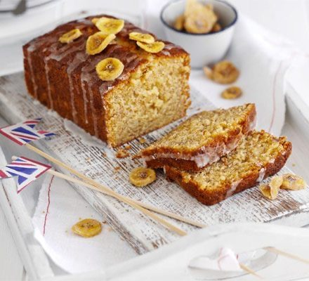

Banana Bread
A cross between a banana bread and a drizzle cake, finished with a runny icing and banana chips.

Before you start heat the oven to 160°C fan. The loaf needs about 1 hour to cool before it can be iced.
Ingredients
Loaf
Icing
Method
Stops your screen dimming and locking while your hands are busy. It switches off when you leave this page.
- Heat the oven to 160°C fan. Butter a 900g loaf tin and line the base and sides with baking parchment.
- Cream the 140g butter and 140g caster sugar together until light and fluffy.
- Slowly beat in the 2 large eggs with a little of the 140g self-raising flour.
- Fold in the remaining flour, the 1 tsp baking powder and the 2 mashed bananas.
- Pour the mixture into the prepared tin and bake at 160°C fan for about 50 minutes, until cooked through. Start testing with a skewer at 5-minute intervals from around 30-40 minutes in — it should come out clean — as the time varies with the shape of the tin.
- Cool in the tin for 10 minutes, then turn out onto a wire rack and leave to cool completely.
- Mix the 50g icing sugar with 2-3 tsp water to make a runny icing.
- Drizzle the icing across the top of the loaf and decorate with a handful of dried banana chips.
Notes
- Freezes well un-iced.
- Without self-raising flour, mix 100g plain flour with 1 tsp baking powder and scale that ratio to the quantity you need.
Source: https://www.bbcgoodfood.com/recipes/brilliant-banana-loaf